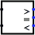

Comparador
Comparador
| Biblioteca: |
Aritmética |
| Introdução: |
2.0 Beta 22 |
| Aparência: |
 |
Comportamento
Serve para comparar dois valores, quer sejam sem sinal ou em complemento de dois,
dependendo do atributo Tipo Numérico. Normalmente, uma das saídas será 1, e as outras
duas saídas serão 0.
A comparação será feita a partir dos bits mais significativos em
cada número e irá decrescendo, em paralelo, até onde forem encontrados dois valores
em desacordo. Se, no entanto, um erro ou valor flutuante for encontrado, então,
todas as saídas irão corresponder a esse erro ou ao valor flutuante.
Pinos
- Na face oeste, extremo norte (entrada, com largura em bits de acordo com o
atributo Bits de Dados)
- O primeiro dos dois valores a serem comparados.
- Na face oeste, extremo sul (entrada, com largura em bits de acordo com o
atributo Bits de Dados)
- O segundo dos dois valores a serem comparados.
- Na face leste, marcado por >> (saída, com largura de 1 bit)
- Será 1, se a primeira entrada for maior que a segunda; ou 0,
se a primeira entrada for menor ou igual à segunda.
- Na face leste, marcado por = (saída, com largura de 1 bit)
- Será 1, se a primeira entrada é igual à segunda; ou 0,
se a primeira entrada não for igual à segunda.
- Na face leste, marcado por < (saída, com largura de 1 bit)
- Será 1, se a primeira entrada for menor que a segunda; ou 0,
se a primeira entrada for maior ou igual a segunda.
Atributos
Quando o componente for selecionado ou estiver sendo acrescentado,
Alt-0 até ALT-9 irão alterar o seu atributo Bits de Dados
.
- Bits de dados
- Largura dos bits de dados da entrada e da saída do componente.
Comportamento da ferramenta Testar
Nenhum.
Comportamento da ferramenta Texto
Nenhum.
Voltar à Referência para bibliotecas